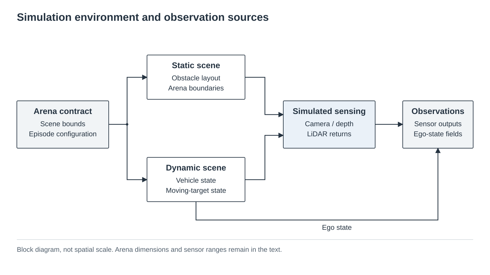
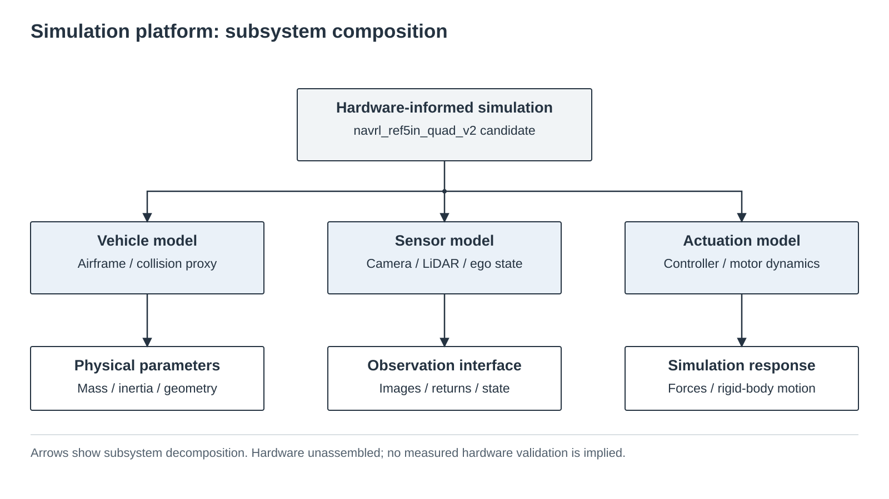
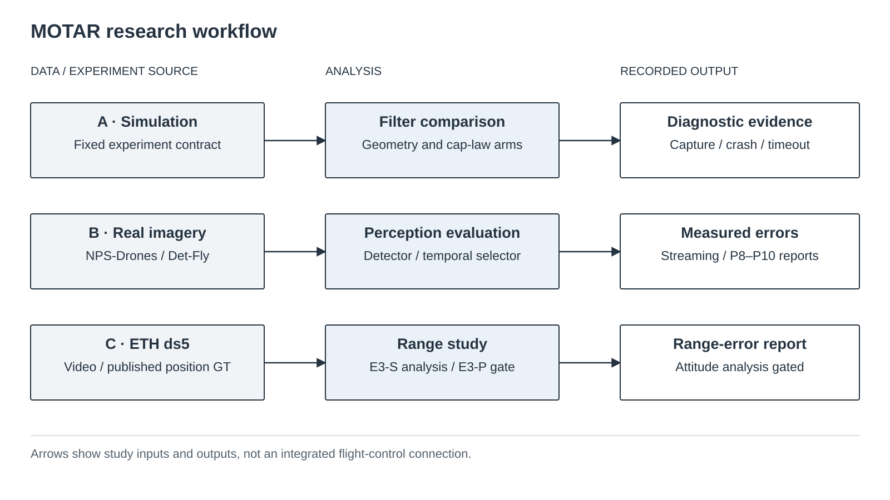
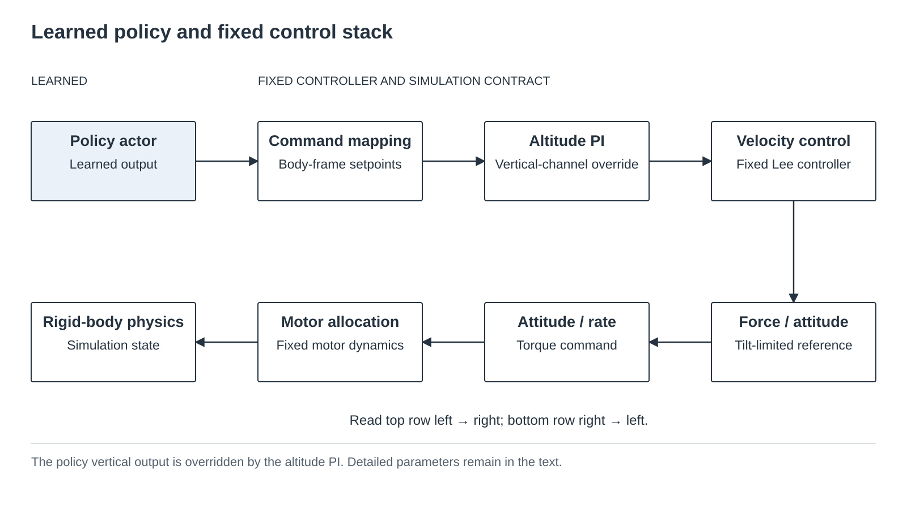
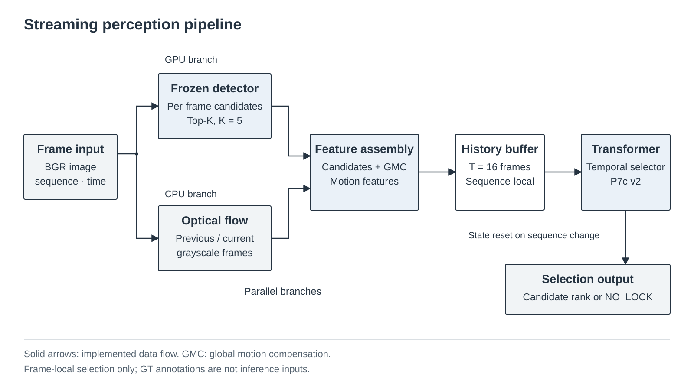
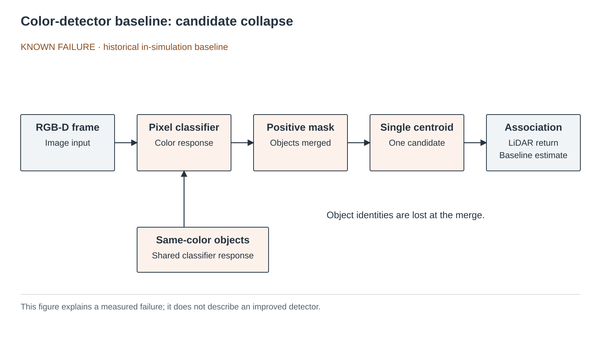
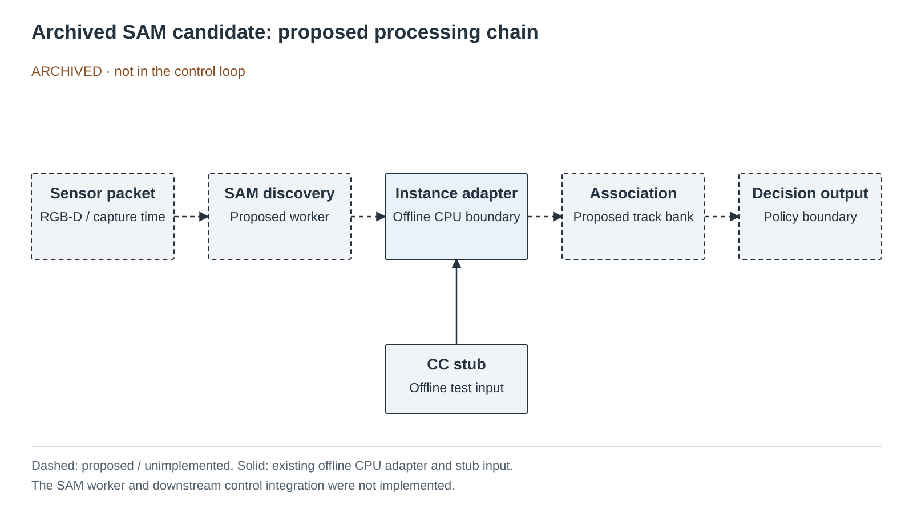
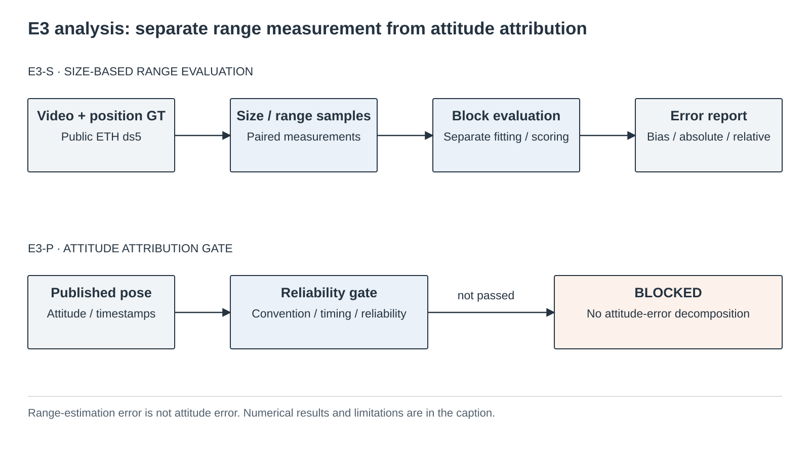
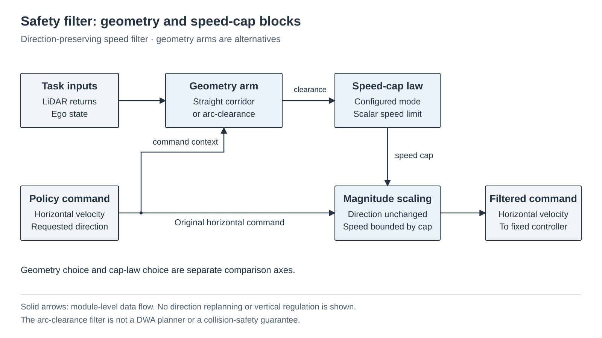

{kind=link}
{kind=link}
{kind=link}
Structured perception
RGB-D target track, 4×72 LiDAR, ego velocity·yaw·height를 898-D history로 구성합니다. 탐지기는 YOLO가 아니라 1×1 conv 색 분류기이며 동색 디코이를 구분하지 못합니다.
카메라와 LiDAR만으로 밀집 장애물 속 움직이는 표적을 추적하는 드론 정책. 성공률 경쟁보다 언제, 왜 실패하는지를 재현 가능한 수치로 설명합니다. 과거 interception/capture 실험은 원래 의미로 보존하며, rendezvous라는 공개 표현이 과거 결과를 다른 기능의 증거로 바꾸지는 않습니다.
TECHNICAL_PASS, shortcut 감소는 미측정입니다. 원자료 감사 · 2026-09-12
01 · OVERVIEW

이 그림은 공간 축척도가 아니라 환경과 관측의 구성도입니다. 보관된 축척도의 측면도는 막대가 2.0 m로 높고
순항 고도가 1.0 m이므로 막대가 항상 어떤 빔에는 걸린다는 것을 보입니다 —
접촉 포렌식의 VERTICAL_OUT = 0.0%가 그 결과입니다.

하위 시스템의 구성 관계이며 실제 부품 배선도가 아닙니다. 기존 치수·매개변수 그림.
navrl_ref5in_quad_v2 1.20 kg · 대각 220 mm · 모터당 9.6 N →
TWR 3.26. 2.5 m/s에서 정지거리 1.81 m, 선회반경 3.12 m.
hardware-informed simulation candidate이며 실기는 미조립입니다.

README 블록 다이어그램 9개 · SVG + 4K PNG + 벡터 PDF 다운로드. 실제 비행의 end-to-end 연결을 뜻하지 않습니다. 이전 연구 요약 그림.
02 · 3D ARENA
새 physical fresh lineage의 40×40×3 m arena와
footprint_clearance 배치를 재현합니다. 실제 collision footprint의 외접원을
사용해 막대 중첩을 금지하고 표면 여유 0.45 m를 유지하며 merge fallback도 쓰지 않습니다.
과거 정량 결과의 navrl_band는 중첩을 허용한 historical 환경입니다.
표적은 10 Hz 고정 simulation clock에서 움직이고 화면만 보간합니다.
기본 routed-preview는 동결된 historical global_astar_v1
exact-AABB route를 bounded/lagged browser motion으로 설명합니다. recovery-v2 state machine을
재현하거나 성공으로 표시하지 않습니다. 코너 전환은 planning-time clearance certificate로 검사하고 실패 재계획은 직전 목표
1.0 m 이내를 제외합니다. pursuer와 target motion은 설명용이며, 이 화면은 PPO 실행 영상·PhysX 재생·성능 측정값이 아닙니다.
Loading 3D arena…
Routed preview: 0.25 m deterministic global route, exact bar AABB, 0.45 m tracking reserve, target 3-D box half-diagonal support(0.2069 m), boundary 1.25 m + support, certified corner handoff, 실패 후 직전 goal 1.0 m exclusion을 적용합니다. 대안 경로가 없으면 zero command입니다. Global route + bounded/lagged browser preview · NOT PhysX/PPO.
03 · METHOD
RGB-D target track, 4×72 LiDAR, ego velocity·yaw·height를 898-D history로 구성합니다. 탐지기는 YOLO가 아니라 1×1 conv 색 분류기이며 동색 디코이를 구분하지 못합니다.
17개 token을 4-layer Transformer가 처리합니다. PPO는 actor와 asymmetric critic weight를 학습합니다.
출력은 유한한 body velocity와 yaw-rate 명령이며 altitude PI와 Lee controller를 거쳐 동역학에 적용됩니다.

aₓ, aᵧ, aψ가 수평 속도와 yaw-rate를 정합니다. actor가 출력한 a_z는 실행되지 않고 altitude PI가 수직 명령을 덮어씁니다.
body-frame setpoint를 yaw로 world frame에 회전한 뒤 실제 world velocity와 비교합니다. 고정 gain Kv=[2.5,2.5,2.5]로 가속도와 요구 힘을 만듭니다.
요구 힘의 수평 성분을 45° 이내로 제한합니다. upright 상태에서는 T=fz/b3z 보상으로 기울어진 동안에도 수직 힘을 우선 보존합니다.
attitude/rate error가 body torque가 되고 allocation matrix가 네 모터 명령으로 바꿉니다. 모터는 0.04 s 1차 지연을 거쳐 100 Hz rigid-body physics에 적용됩니다.
03b · LINEAGE STATUS
아래는 이번 주 안전필터·인지 결과와 별개 축인 항법 학습 계보의 현재 상태입니다. 상단 배너에서 여기로 옮겼습니다 — 여전히 유효한 판정이지만 이번 주의 결과가 아닙니다.
PASS_LEARNING_VIABILITY 후 seed-911 stopped at epoch 21,973
(운영자 중지, 145 bars 도달).04 · PERCEPTION
최종 경로는 NPS-Drones detector를 Det-Fly에 zero-shot 평가하고, Top-K 후보를 유지한 뒤 CNN only / KF / GRU / Temporal Transformer association을 같은 held-out clip에서 비교합니다. 실사에서 측정한 miss·bearing·ID switch·reacquisition·latency·range uncertainty를 simulation에 주입한 뒤 PPO를 새 계보로 재학습합니다. 장거리 12–28 m는 camera 중심이고 LiDAR는 12 m 이내 range 보정과 독립 obstacle sensing에 제한합니다.

실선은 구현된 데이터 흐름입니다. 출력은 프레임 안의 후보 선택이며 물리적인 track ID나 거리 추정이 아닙니다. 평가 결과 요약 · 논문형 그림 다운로드.
22.48 FPS는 개발 환경의 decode-inclusive 측정입니다. validation과 test는 서로 다른 영상이며, P10 주 효과의 CI는 0을 포함합니다. 센서 융합과 실제 비행은 별도 미검증 범위입니다.
탐지기는 YOLO가 아닙니다. 1×1 conv 색 분류기가 픽셀을 고르고, 양성 픽셀 전부가 하나의 중심점으로 붕괴합니다. connected components가 없어 후보는 언제나 1개이므로, 같은 색 물체가 하나만 더 있어도 구분하지 못합니다. v7 학습 CNN(frame precision 0.99766)조차 디코이 5개에서 가시 프레임의 90.27%에서 틀린 물체를 잡습니다. confidence는 N=1/3/5에서 0.826→0.896→0.892로, 단조 증가는 아닙니다. 개선이 아니라 결함의 정량화입니다.

현재 실영상 검출기가 아닌 기존 색 검출기의 실패 경로입니다. 기존 상세 그림과 측정값.
| 무엇을 바꿨나 | capture 효과 | 판정 |
|---|---|---|
| 자료구조 — connected components 다중 후보 + χ²(3) 게이팅 | 없음 (FTLR +1.3 pp) | RECOGNITION_DOMINANT |
| 거리 측정 분산 — 물리적으로 옳은 2차 모델 (20 m에서 2.3배) | 없음 (−0.34 pp, CI [−3.19, +2.51]) | VARIANCE_INSENSITIVE |
| 어느 물체를 lock 하는가 — 동색 디코이 5개 | FTLR 90.27% (N=5) | COLOR_SHORTCUT_CONFIRMED |
세 번째 행의 판정 지표는 FTLR입니다. 같은 셀의 capture는 68.13% → 12.64%로 떨어지지만 그 원값은 판정에 쓰지 않습니다 — distractor가 다섯 코드 경로에서 자유 공간으로 남아 충돌이 미귀속 contact로 기록되고 정적 goal이 distractor 안에 놓일 수 있습니다. 방향은 명확하지만 크기는 교란돼 있습니다.
구속 조건은 측정 품질이 아니라 물체 동일성입니다. 더 정밀하게 재도, 후보를 더 잘 관리해도 달라지지 않습니다. 무엇을 표적으로 볼 것인가만이 문제입니다.

점선 블록과 연결은 미구현입니다. 기존 전체 설계 후보 그림.
위 구조는 폐기된 설계 후보이며 기록 목적으로만 보존합니다. 제어루프에 들어간 적이 없고 성능 주장도 아닙니다. 초록색 instance boundary만 offline CPU 어댑터로 구현돼 있고, SAM worker·전송·제어루프 연결·성능 측정은 존재하지 않습니다. 대체 사유 둘: (1) 표적에 형상 정보가 없습니다 — detector가 보는 표적은 반지름 0.15 m 해석적 구에 상수색을 칠한 것이고, 디코이 3종 중 하나는 같은 반지름의 구입니다. 배경은 40×24 depth를 업샘플한 회색 명암이며 텍스처도 조명도 없고, 저장소에 쿼드로터 메쉬가 존재하지 않습니다. (2) 일반 시뮬로 학습한 detector는 실제 저조도에서 mAP 37.2%인 반면 실사진 기반은 96.4%입니다. 우리 렌더러는 그 "일반 시뮬"보다 열악합니다.
따라서 인지는 실제 공대공 데이터로 학습하고, 시뮬에는 그 detector의 측정된 오차 모델을 주입해 정책을 학습시킵니다.
1차 학습 결과(2026-09-07). NPS-Drones를 640 px 타일로 잘라(train 19,659 / val 4,096)
YOLOv5s를 40 에포크 학습했습니다. mAP50은 13 에포크에서 0.579로 최고였고 그 뒤 평탄합니다 —
12~40 에포크 평균 0.549 ± 0.015이므로 실제 수준은 0.55 대역이고 0.579는 그 흔들림의
꼭대기입니다. 같은 구간에서 훈련 손실은 25.1 % 줄었는데 검증 손실은 0.7 %만 줄어(과적합 시작) 에포크를
더 주는 것으로는 오르지 않습니다.
Det-Fly zero-shot P3(2026-09-07). frozen NPS checkpoint로 13,271장을
전수 평가했습니다. native 4K의 IoU 0.3 P/R/AP는
0.0097 / 0.1668 / 0.0035, NPS 학습 크기에 맞춘 ÷4 arm은
0.2416 / 0.3503 / 0.2382입니다. 사전 규칙상
SIZE-DOMINANT ZERO-SHOT FAILURE이며, NPS-only detector의 즉시 4K 배치는
기각합니다. 판정 근거는 크기별 재현율입니다 — native arm은 64 px를 넘는 순간
무너집니다(64–128 px 4,961개 중 4개, 128 px 이상 2,151개 중 0개).
그런데 Det-Fly 박스의 54 %가 64 px를 넘습니다. ÷4로 축소해 학습 분포에 넣으면 같은
구간 재현율이 0.246으로 돌아옵니다. Det-Fly 표적 대각 중앙값이 109 px로 NPS 학습 타일의 25 px보다
4.3배 크고, 표적의 4분의 3이 학습 분포 상위 5 % 밖에 있습니다. 다만 크기를 맞춘 arm의 AP도 NPS
자체 검증의 19 %에 그치므로 크기 보정 후 잔여 도메인 격차는 남습니다.
배경 4종 mapping은 배포 metadata에 없어 source group 010/020으로
대체했습니다. 실행 계약·지표·receipt
Joint detector dataset v1. Det-Fly 020 전체 6,913장을
source-group 단위 sealed test로 분리했고, 010은 최대 자연 ID 단절
4333→4752에서 train 4,200 / val 2,158장으로 나뉘었습니다. NPS clip split을
유지한 통합 YAML은 train 29,824, val 9,307 samples이고
test: key가 없습니다. 39,131 sample 전수 검증에서 source-unit·exact-image
split 교차와 test 유입은 모두 0입니다.
split·dataset 정본
Joint detector final(2026-09-08). 사전 동결한 batch 8, 30 epochs,
320–960 multi-scale 계약을 완료했습니다. validation으로 선택한 epoch 26의
P/R/mAP50/mAP50-95는 0.7763 / 0.6590 / 0.6917 / 0.3234이고 test를 열기 전에
checkpoint hash를 동결했습니다. sealed Det-Fly 020 native 4K의 IoU 0.3
P/R/AP는 0.2729 / 0.8640 / 0.7389입니다. zero-shot 크기 실패는 회복했지만
confidence 0.25에서 FP 15,911개라 운영 threshold는 validation에서 별도로 보정해야 합니다.
zero-shot 0.0035와 이 0.7389를 한 실험의 전후로 읽으면 안 됩니다 — 앞은
Det-Fly를 한 장도 보지 않은 모델의 전수 평가이고, 뒤는 Det-Fly 010을 학습에 쓴
모델의 성적입니다. 크기 문제를 고치면 된다는 증거이지 일반화 성능이 아닙니다.
학습·최종 평가 계약
P4 PASS · P5 KF v1 REJECTED. P4 Top-K=5 후보는 NPS val/test에서 timestamp·schema·semantic·hash 검증을 통과했습니다. NPS test 1,725 frames/8 clips에서 IoU≥0.3 frame hit는 CNN-only 0.6145, KF 0.4655였고, proxy false lock은 0.2450 대 0.4843이었습니다. test를 보고 KF를 재튜닝하지 않았습니다. 원 track ID와 intrinsic이 없어 실제 ID switch/FTLR와 degree bearing error는 측정하지 않습니다. producer latency는 동시 GPU 부하가 있던 offline 측정입니다. 결과·hash
P6/P7 COMPLETE · Transformer selected on validation. 동일 P4 후보로 NPS
train 13,510 frames/35 clips에서 GRU T=8과 Transformer T=16을 학습했습니다. validation
utility (hit − proxy false lock) / frames는 CNN-only 0.6655, KF 0.2639,
GRU 0.6315, Transformer 0.6725여서 Transformer를 선택했습니다. CNN보다 hit는
14 frame 적고 proxy false lock은 30 frame 적습니다. validation 7 clips의 작은 차이입니다(NPS test는
파이프라인 확정 뒤 S4에서 한 번만 열었습니다 — 아래). 실제 ReID·FTLR·ID-switch 개선 주장도 아닙니다.
P6/P7 결과·hash
Streaming 파이프라인(2026-09-09). 프레임 → detector → motion/GMC →
시간 선택기를 직렬로 묶어 decode 포함 14.9 FPS로 돕니다(detector 26.4 ms,
motion 33.4 ms, selector 2.4 ms, decode 5.2 ms). 여기서 나온 재현성 실패는 원인이 겉보기와
달랐기에 기록할 값어치가 있습니다. RGB 재검출이 frozen cache와 2,296프레임 중 5개에서 어긋나
비결정성처럼 보였고 TF32·benchmark·deterministic 플래그를 뒤졌지만, 실제 원인은
실행 환경 불일치였습니다 — cache는 torch 2.10 / cuDNN 9.10.2에서 만들어졌고
재실행은 torch 2.4 / cuDNN 9.1이었습니다. 두 스택은 서로 다른 컨볼루션 커널을 골라, 같은
60프레임에서 한쪽은 비트 일치하고 다른 쪽은 confidence가 최대 45 % 어긋납니다. 원래 환경으로
전수 재실행하니 rank_mismatches 0으로 frozen output이 그대로 재현됐습니다.
이후 모든 receipt는 인터프리터와 가속 스택을 기록합니다.
병목은 GMC가 아니라 광류입니다. motion 단계를 분해하면 Farnebäck 광류가 97.7 %(36.58 ms)이고 GMC RANSAC은 0.17 ms입니다. 광류는 회색조 두 장에만 의존하고 후보는 그 뒤에 들어오므로 GPU 검출기와 겹칠 수 있습니다. 프로토타입 실측은 순차 112.3 ms 대 겹침 74.7 ms이며 flow 배열은 비트 동일이었습니다.
S1 겹침 적용 완료(2026-09-09). validation 2,296프레임 전체에서 직렬·겹침 각 3회 모두 candidate·rank·motion feature 바이트와 하위 지표가 정확히 일치했습니다. decode 포함 mean 67.91 → 44.49 ms, 3회 평균 14.72 → 22.48 FPS입니다. 그래서 이 입력과 기록된 runtime에 한해 “출력 비트 동일”을 씁니다. 결과·hash
P8 오차 모델 → P9 주입기 → P10 재적응(2026-09-09). 시뮬레이터가 받는 것은
가우시안이 아니라 측정 분포입니다. P8은 단일-GT 1,310프레임에서 크기별 중심 오프셋, hit/false-lock/no-lock
3-state 전이, 중도절단 miss burst, latency를 쟀습니다(다중-GT 986프레임은 크기 조건부 집계에서 제외,
<8 px와 ≥64 px는 미지원으로 명시). P9는 그 분포를 주입하는 모듈이며 사전등록한 적합도 gate
(occupancy TV ≤ 0.05, transition max ≤ 0.06, offset KS ≤ 0.1, latency KS ≤ 0.05)를
세 번째 버전에서 통과했습니다 — v1은 구현 결함 둘, v2는 유한표본 정상분포 문제였고
둘 다 삭제하지 않고 results/perception_p9_v{1,2}_failed_2026-09-09/에 보존했습니다.
50–103 ms 간격의 전이확률은 p_stay(dt) = p_stay(ref_dt)^(dt/ref_dt)로 시뮬 스텝에 맞춥니다.
| P10 추정량 (평가 시드 541+547 결합, 셀당 ~2,050 에피소드) | capture | 95 % CI |
|---|---|---|
| 측정 오차가 동결 ep25000에 물리는 비용 | −4.57 pp | [−6.32, −2.82] |
| 측정 오차가 재적응 정책에 물리는 비용 | −1.90 pp | [−3.65, −0.16] |
| 주 추정량 재적응 − 동결, 둘 다 오차 하 | +1.41 pp | [−0.38, +3.21] |
| clean 유지도 재적응 − 동결, 둘 다 clean | −1.25 pp | [−2.95, +0.44] |
주 추정량의 CI는 0을 포함하며 clean 성능 보존이나 비열등성도 입증하지 못했습니다. 비용 변화의 상호작용은 별도 추정량으로, 사후 계산 +2.67 pp [+0.20, +5.14]는 탐색적·다중비교 미보정입니다. 개별 비용 CI의 겹침은 상호작용 검정이 아닙니다. 학습 시드가 811 하나이므로 시드 일반적 PPO 주장이 아닙니다. 평가 중 P9 모델 SHA를 수치 config-drift 루프에 넣어 P9 학습 체크포인트가 로드 즉시 죽는 결함을 찾아 고쳤고, 회귀 테스트를 allow-list로 뒤집은 뒤 8셀을 전부 재실행했습니다. P10 8 cell·판정
S4 봉인 test 1회 개봉(2026-09-09). 동결한 P7c v2 선택기를 NPS test 1,725프레임/8영상에서 한 번 평가했습니다. hit 59.19 %, 선택 중 false lock 17.06 %, no-lock 28.64 %, utility 0.4701로 validation 0.6855보다 0.2154 낮습니다. 다른 영상이라 대응 효과 추정이 아니라 일반화 경고이고, 본 뒤 재조정하지 않았습니다. 이 test는 P5 KF 기각 때 한 번 열렸으므로 완전히 미관측인 holdout은 아닙니다. S4 report·receipt
05 · EXTERNAL DATA
실데이터로 학습하기로 한 이상 라이선스가 설계 제약이 됩니다. 문구가 불명확한 데이터로 학습한 결과는 게재 단계에서 무효가 될 수 있습니다. 아래는 2026-09-04에 직접 확인한 결과입니다. 기기 제약은 여유 저장 공간 약 15 GB(RAM이 아니라 SSD)이고, 이것이 규모 선택을 지배합니다.
| 자산 | 라이선스 | 규모 | 시점 | 상태 |
|---|---|---|---|---|
| NPS-Drones | BSD-3-Clause | 2.04 GB | 공대공 | 확보·P2 완료 · 70,250 프레임 · 표적 10×8–65×21 px |
| Det-Fly | repo MIT; dataset 범위 미명시 | 18.849 GB (풀림) | 공대공 | 확보·전수 검증·P3 완료 · 13,271장 3840×2160 |
| MIDGARD | 명시 없음 (인용 요청만) | 3.53 GB | 공대공 | 미확보 · 거리 GT 포함이라 오차 모델에 유용 |
| DUT Anti-UAV | Apache-2.0 | 1.32 GB | 지상→공중 | 시점 불일치 · OOD 세트로만 가치 |
| AOT | CDLA-Permissive | 13.4 TB | 공대공 | 전량 불가 · 부분 2–3 시퀀스만 · 흑백 + 유인기 표적 |
| 자산 | 막힌 이유 |
|---|---|
| ARD100 (YOLOMG) | Baidu 전용 배포, 규모 미공개(추정 20–40 GB). 코드가 GPL-3.0이라 파생 코드에 전염. 평균 표적 면적 0.01%로 우리 영역에 가장 가까운데 접근이 막힘 |
| ARD-MAV (GLAD) | zip 14.6 GB — 압축 해제 전에 이미 여유 초과. 저장 공간이 늘면 1순위 |
| Drone-vs-Bird | 공개 링크 없음. 데이터 사용 동의서 서명 필요, 처리 기간 미공지. 게다가 지상→공중 |
| FL-Drones | 라이선스 모순 — EPFL은 공개 링크를 두는데 후속 논문 저자는 "저자 허락 필요"라고 명시. 문구가 없으므로 기본 저작권 적용 → 서면 허락 없이 사용 불가 |
| 레포 | 가중치 | 라이선스 | 비고 |
|---|---|---|---|
| GLAD | 확보 · yolov5s_GLAD.pt 14.4 MB |
LICENSE 파일 없음 (배지만) | ARD-MAV 학습 = 우리 영역과 일치. TensorRT 엔진은 하드웨어 종속이라 사용 불가 |
| TransVisDrone | NPS/FL/AOT 3종 | MIT | 라이선스가 가장 깨끗. 단 시간 모델이라 연속 5프레임 필요 |
| YOLOMG | 없음 | GPL-3.0 | 직접 학습해야 하는데 ARD100 접근이 막힘 |
| C2FDrone | 없음 | 없음 | 재현 불가 |

시뮬레이터가 만들지 못하는 것은 실제 표적의 겉보기 크기 변동입니다. ETH
drone-tracking-datasets ds5는 토털스테이션 기반 위치 GT를 제공하여 cam0 영상
4.5 GB를 받아 검증했습니다. 결론부터 적으면 크기→거리는 쟀고, 절대 기하는 막혔습니다.
| 단계 | 결과 | 상태 |
|---|---|---|
| E1–E2 수집·검증 | 분할 압축 43개 해시 검증 후 해제 · 표적 식별 근거는 겉보기 크기-거리 일치 6.2% (held-out, 3,107프레임) (2026-09-11 정정: 이전의 "6암 기체" 단서는 철회, 세 대 모두 쿼드로터) · 41프레임 검수 후 3,495프레임 추적, 궤적 매끄러움 잔차 0.196 px (전체 측정 정확도의 상한은 아님) | 완료 |
| 타임스탬프 정합 | 공개 시각 20,969행 대 컨테이너 20,970프레임 — 원인은 mp4 edit list가 정확히 1프레임을 건너뛰기 때문. 다만 최적 정렬이 −3.5프레임(−118 ms)의 비정수라 프레임 재라벨링으로 설명되지 않음 |
미해결 |
| 카메라 보정 | 공개 파일은 자기 체커보드 122장에 대해서는 검증됨(홀드아웃 1.245 px 대 재계산 1.262 px). 드론 재투영 잔차는 5.6 px이고, 방사왜곡·초점·주점·카메라 위치·시간 드리프트·레버암 어느 가설도 모든 홀드아웃 분할에서 개선되지 않음 | 절대 기하 불가 |
| E3-S 크기→거리 | 크기 측정·위치 GT·초점거리를 사용하고 미해결 타이밍은 민감도로 보고. 15초 블록 leave-one-block-out. 블록별 절대 상대 거리 오차 중앙값의 중앙값 6.2 %, 블록간 산포 9.3 %p, 3,107프레임 31–108 m | SIZE_RANGE_USABLE |
| E3-P 자세 분리 | 자세 규약은 데이터로 확인(내재 xyz, body→NED, 2위와 16.3° 차) · aspect와 거리는 분리 가능(상관 0.21) · 타이밍 영향 2.9 % · 세 번째 검사도 실행 후 ATTITUDE_NOT_RELIABLE; 자세 오차 분해는 미실행 |
BLOCKED |
규율에 관한 기록. E3-S는 사전등록을 먼저 커밋한 뒤 실행했고 게이트 넷을 그대로 적용했습니다. 반대로 앞서 16점에서 "왜곡계수가 틀렸다"고 낸 잠정 결론은 678점 홀드아웃에서 일반화하지 않아 철회했습니다. E3-P 게이트도 전제조건 둘이 과했음을 실측으로 확인해 정정했지만, 남은 신뢰성 기준은 통과할 때까지 바꾸지 않았습니다.
해석 제한. 6.2 %는 크기 기반 거리 추정 성능일 뿐입니다. 시야각에 따른 크기 변화, 분할 잡음, 모션 블러, 미모델링 왜곡, 미해결 타이밍이 모두 섞여 있고 분리하지 않았습니다. 이 비행에서는 거리와 시간이 교락돼 있어 거리 구간별 편향을 거리 효과로 읽을 수 없습니다. 카메라 한 대, 비행 한 번, 31–108 m 범위입니다.
ultralytics/yolov5는 AGPL-3.0입니다. 단순 사용과 소스 배포를 구분하고 실제 포함·수정·배포 관계에 따라 의무를 검토합니다.
저장소 전체가 자동으로 같은 라이선스가 된다고 단정하지 않습니다.
시뮬레이터의 표적은 0.283 m 빨간 상자였고 방해물 구·상자·기둥도 같은 빨강이었습니다. 요격기는 9링크 기체입니다. 이 상태에서 검출기가 배운 것이 형상인지 색인지 구분할 수 없습니다. 그래서 렌더러부터 자산까지 다시 만들고, 각 단계를 측정으로 확인했습니다.
검증 대상과 검증 도구가 같은 코드를 쓰면 확인이 되지 않습니다. 프로토타입은 aerial_gym을
import하지 않으며(테스트로 고정), 재사용하는 것은 기존 Warp 광선 커널뿐입니다. 그 커널조차
SHA-256과 AST로 대조한 뒤 패키지를 거치지 않고 파일에서 직접 읽습니다. 광선 2패스의 hit 마스크가
어긋나면 이미지를 내놓지 않고 거부합니다.
| 단계 | 결과 | 상태 |
|---|---|---|
| R3 렌더러 계약 | 두 독립 프로세스의 배열 SHA가 전부 일치. 조명을 바꾸면 RGB가 바뀌고(MAE 0.202), instance ID를 옮겨도 RGB는 바이트 단위로 불변 | PASS |
| R4 · R4b 외형 모델 비교 | 기준 A/B/D/E 통과, 기준 C는 두 번 다 실패(R² 0.586 → 0.582). 임계를 낮추지 않았고 장면을 골라내지도 않았습니다 | FAIL 보존 |
| C의 해석 한계 | 작은 상자 픽스처와 공통 조명은 일반화를 제한합니다. 픽셀뿐 아니라 면도 독립 장면 반복이 아닙니다. 다른 단위의 회귀가 기존 기준의 무효나 실패 원인을 증명하지 않습니다 | 원인 미확정 · FAIL 유지 |
| 배경 장면 v1 | 바닥·벽·12각 기둥·2링크 경첩 패널. 뷰당 보이는 삼각형 8 → 60–67개, 법선 4 → 10종. 반사실 검사 전부 통과: 알베도를 바꾸면 해당 픽셀 전부 변하고 나머지는 bit-exact 불변 | TECHNICAL_PASS |
| R5 음영 비용 | 학습 해상도(160×90, 128장면)에서 음영 교체는 반복당 0.66 ms, 183.9 MiB Torch peak allocated. 추가 음영 메모리나 전체 프로세스 VRAM은 아닙니다. 상자 두 개 픽스처이며 전체 응용 비용은 미측정입니다 | 측정 완료 |
| URDF 자산 로딩 | urdfpy+trimesh가 기본 경로이고 직접 쓴 파서는 교차검증용으로 남겼습니다. 다섯 자산에서 링크 순서·월드 변환·기하 파라미터·재질 색 불일치 0 |
TECHNICAL_PASS |
| V1 표적 실루엣 | 독립 프로토타입 면적비 0.587; 기존 simulator probe의 저장된 픽셀 수 비 3,840쌍 모두 1.000. 현재 detector foreground는 해당 visual 실루엣이 아님 | PARTIAL_EVIDENCE 테스트만 TEST_CONTRACT_RECONCILED |
검사한 물리 기하 추출기 두 곳은 collision을 읽지만,
warp_asset.py는 visual mesh도 읽습니다. 두 추출기의 결과와 base_link 관성·충돌
보존이 전체 시뮬레이션 동일성을 증명하지는 않습니다. v3는 13 links로 변경됐으며 과거
CONTRACT_MISMATCH는 5cea0e4의 테스트 수정으로 해소됐습니다. ef59832에서 1,533개 실행,
실패·오류 0, skip 4를 재확인했습니다. 기본값은 v2이며 통합 검증 완료로 표시하지 않습니다.
후속 검사와 한계
독립 프로토타입에서만 21개 시선의 면적비 중앙값 0.587(약 41% 감소)을 측정했습니다. 기존 simulator probe는 저장된 픽셀 수 비가 전부 1.000이며 저장된 거리도 항목별로 같습니다. 이는 현재 detector 입력이 드론 실루엣으로 바뀌었다는 증거가 아닙니다.
원자료에는 mask/RGB/pose와 실행 환경 기록이 없으므로 영상·전체 궤적 동일성은 미확인입니다. 3,840개 관측을 독립 실험 반복으로 세지 않습니다. 재계산 방법과 한계.
현재 foreground의 평면 채움은 URDF 재질 색과 다른 경로입니다. 같은 색은 물체와 배경을 구분하는 단서일 수 있지만 같은 색 물체들 중 지정된 물체의 identity를 구별하지는 못합니다. 이번 단계는 색 지름길 감소를 주장하지 않습니다. 독립 renderer의 기술 검증을 detector 통합이나 정책 성능의 근거로 사용하지 않습니다.
06 · SAFETY FILTER
거버너는 명령 방향 주위 반폭 0.45 m 직선 회랑 안의 LiDAR ray만 보고 수평 명령의 크기만 조정합니다. 방향은 정책이 정합니다. 충돌의 77~78%는 그 회랑 밖에서 납니다 — 맹점은 측방, 수직(z 무규제), 미지 공간(무반사=자유), 직선 가정 넷입니다.
A7(2026-09-05)에서 상한 법칙과 감시 기하를 2×2로 분리했습니다. 거버너 없이 학습한 정책에서는 안전을 법칙이 삽니다:
정지거리 법칙(stopcap)은 같은 직선 회랑에서 crash를 −6.47 / −5.51 pp(seed 509 / 491, 95% CI 0 제외)
낮추지만 timeout이 2배, 3 m 미만 체류가 3배입니다. 그 계보에서 원호 기하(dwa_arc)는 안전을 더 주지 않고
비용만 되돌립니다 — 원호의 crash 기여는 12개 CI 전부 0을 포함하고, 정지법칙 아래 timeout −9~−11 pp,
개입률 −15~−25 pp, capture +11 pp를 회수합니다.
"어느 법칙이 옳은지는 정책이 무엇과 함께 학습됐는지가 정한다"는 설명은 시드 반복에서 살아남지 못해 철회했습니다(2026-09-09). 학습 시드 197 하나(D4)에서는 riskcap을 학습 루프에 넣어 1,000 epoch 더 학습하면 정지법칙의 이득이 사라지는 듯했습니다 (+0.48 pp [−1.82, +2.78]). 사전등록한 재현(R-C, 학습 시드 233·239)의 예측은 riskcap과 함께 학습한 정책에서 stopcap−riskcap이 ±2 pp 안(CI 0 포함)이라는 것이었는데, 실측은 두 시드 모두 −8.59 / −7.17 pp로 CI가 0을 제외했고 거버너 없이 학습한 정책(−2.93 / −8.69 pp)과 다르지 않았습니다. 상호작용은 seed 233에서 반대 방향으로 유의(−5.65 [−9.01, −2.30]), seed 239에서 불유의(+1.51 [−2.00, +5.03])입니다. 실행 전에 적어둔 0/2 규칙대로 C3를 철회하고 "이 계보에서 정지법칙의 capture 손해는 학습 시 거버너 선택과 무관하게 나타난다"로 대체합니다. R-C 8 cell·판정
계보를 넘어 살아남는 것은 원호 기하입니다. riskcap과 함께 학습된 정책(ep25000)을 평가 시드 3개 × 밀도 5개에서 다시 재면 원호가 15/15 전부에서 crash 최저이고, 결합 추정이 riskcap 대비 −1.49 pp [−1.90, −1.08], 정지법칙 대비 −1.25 pp [−1.65, −0.85]입니다. 한 시드 안의 다섯 밀도는 같은 정책·장면 샘플러·난수열을 공유하므로 이 구간은 이 셀들에 대한 정밀도입니다. 그래서 시드를 하나의 관측으로 세는 두 번째 구간을 함께 봅니다 — riskcap 대비 −1.49 [−2.42, −0.57] p=0.020, 정지법칙 대비 −1.26 [−1.96, −0.55] p=0.017로 세 배 넓어져도 여전히 0을 제외합니다. 그것이 시드 일반화의 근거입니다. 반면 정지법칙과 riskcap의 차이는 70 bars에서만 셀 단위 −1.19 pp가 남는데 시드 단위로는 −1.20 [−3.06, +0.66] p=0.108로 0을 포함해 탐색적 관찰로만 둡니다. 다른 밀도에 대해서는 "추가 이득이 검출되지 않았다"고만 말할 수 있고, 동등성을 주장하려면 사전 정의된 margin과 TOST가 필요합니다.
튜브를 넓히는 것은 기하에 따라 정반대입니다. 원호를 0.45 → 1.2 m로 넓히면 205 bars에서
crash −5.60 pp와 capture +4.44 pp를 동시에 얻습니다. 같은 폭으로 직선 회랑을 넓히면 임무가 죽습니다 —
205 bars capture 약 10 %, 나머지는 시간초과입니다. 폭은 정면 과잉개입과 측면 감시를 한 손잡이로 묶는데,
원호는 선회 중 정면 먼 곳을 보지 않으므로 그 묶음을 푼다는 뜻입니다.
아래 그림의 "정지여유 양수인데 악화"(15.95→21.31%)는 205 bars·ep25000·brake 2.96 조건입니다.
처방: 배치할 때 넓힌 원호 튜브를 쓴다. 학습 시 필터 선택은 R-C 철회 이후 어느 방향으로도 처방하지 않습니다.
표: docs/a7_arc_attribution_table.md,
판정 docs/plans/confirmation_phase_plan_2026-09-06.md.

직선 회랑과 arc-clearance는 비교군 선택이며 연속 필터가 아닙니다. geometry와 cap law는 별도 축이고 출력은 수평 명령의 크기만 조정합니다. DWA planner나 충돌 안전 보장으로 읽지 않습니다. 기존 직선 기준선 상세도 · SVG·PNG·PDF 다운로드.
07 · EVIDENCE
timeout bootstrap과 corrected-v2 의미론 검증
geometry audit only; 300 bars FAIL 94.661%; no 205 policy evidence
execution/source receipts PASS; route mechanism FAIL
frozen gate ≥99%; neutral pursuer, no PPO loaded
frozen gate ≤1%; unsafe_start dominated
seed 907 · PASS_LEARNING_VIABILITY; held-out 성능 아님
145 bars 도달; 160/205 미도달, 재개하지 않음
seed 313 · Wilson 95% [82.04, 85.24]
Wilson 95% [63.46, 67.57]; crash 34.16%
실제 비행 성능, sim-to-real 성공, 300-bar 전 구간 성능, Transformer의 보편적 우월성.
실제 기체가 미조립이고 실제 센서 로그가 없으므로 현재 software-only gate의 판정은
SYNTHETIC_ONLY이며 실기 성능을 뜻하지 않습니다. 이번
baseline_1p25는 canonical 1.5 m/s 계약과 분리된 lower-contract이므로
1.25 결과를 1.5 성공으로 읽을 수 없습니다. route-off 정책은 145 bars까지만
학습·평가됐으므로 160/205 mastery를 주장할 수 없습니다.
corrected routed gate도 plan 17.78%, fallback 30.02%, 0.6 m/s goals/env 0.21875로 실패해
routed PPO는 여전히 차단돼 있습니다. 또한 표적 식별을 주장할 수 없습니다:
두 detector 모두 COLOR_SHORTCUT_CONFIRMED이고 N=5 v7 false target lock은
90.27%입니다. 마지막으로 riskcap 해제 기구와 off 대비 +9.23 pp 판정은
frozen ep25000 stopcap screen의 결과일 뿐 일반 평가 계약이 아닙니다. 이 필터를 DWA planner나 충돌 안전 보장으로 부를 수 없습니다 — 구현된 것은
arc-clearance 속도 필터이고, 원호가 쓸고 지나가는 원판 안의 장애물을 모두 검출하지 못하는 반례가
현재 소스에서 재현됩니다. A7의 "안전은 법칙이 산다"는
70 bars·ref5in ep1900 두 시드의 추론 시점 결과이고, riskcap과 함께 학습된 ep25000에서는
성립하지 않습니다. 필터를 학습 루프에 넣은 재적응(A8·D4)에서 본 "동반학습이 법칙 이득을 지운다"는
학습 시드 2개를 더한 R-C에서 0/2로 재현 실패해 철회했습니다 — riskcap과 함께 학습한 정책도
정지법칙 아래 capture가 −7~−9 pp 떨어집니다. "riskcap 학습이 악화시킨다"는 반대 주장도 시드 간 방향이 갈려 하지 않습니다.
원호 기하의 우위는 평가 시드 3개에서 재현됐지만 정책은 여전히 한 계보이며,
모든 수치는 시뮬레이션 전용입니다. 인지 쪽에서는 P10 재적응의 주 추정량(+1.41 pp [−0.38, +3.21])이 0을 포함하고
학습 시드가 811 하나이므로 "재적응이 실사 오차에 강건하게 만든다"를 주장하지 않습니다; 봉인 test의
utility 0.4701은 validation 0.6855보다 낮고 다른 영상이라 대응 비교가 아닌 일반화 경고입니다.
08 · CONTRACT
ref5in은 hardware-informed simulation candidate입니다. CAD/BOM, 실측 관성·추력, 열·전원 및 비행 식별을 완료한 실제 플랫폼 사양이 아닙니다.
{kind=link}
{kind=link}
{kind=link}
{kind=link}